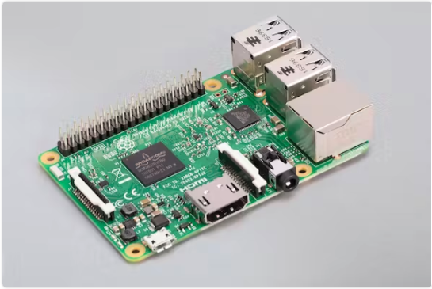

Raspberry Pi
I have 3 Raspberry Pi 3 Model B with hostnames:
pi3onepi3twopi3three

Hardware specifications
Raspberry Pi 3 Model B specifications
| what | type / specifications |
|---|---|
| model | Raspberry Pi 3 Model B |
| RAM | 1 GB |
| SD card | 32 - 64 GB |
| CPU | Quad Core 1.2GHz Broadcom BCM2837 64bit CPU |
| WiFi & bluetooth | BCM43438 wireless LAN and Bluetooth Low Energy (BLE) on board. |
| ethernet | 100 Base Ethernet (100Mbit) |
OS (Operating System)
I have installed (or upgraded to) 32 bit raspbian Buster (Debian Linux)
FYI installing an OS on SD card is very simple:
- downloaded
2021-05-07-raspios-buster-armhf-full.img - with balenaEtcher wrote it to 64GB SD card
- booted raspberry pi wth 64GB SD card
Note that Raspbian has been renamed to Raspberry Pi OS. The latest OS versions (including 64 bit) can be found here.
CPU INFO
pi@pi3one:~ $ cat /proc/cpuinfo
processor : 0
model name : ARMv7 Processor rev 4 (v7l)
BogoMIPS : 51.20
Features : half thumb fastmult vfp edsp neon vfpv3 tls vfpv4 idiva idivt vfpd32 lpae evtstrm crc32
CPU implementer : 0x41
CPU architecture: 7
CPU variant : 0x0
CPU part : 0xd03
CPU revision : 4
processor : 1
...<same output as processor 0>
processor : 2
...<same output as processor 0>
processor : 3
...<same output as processor 0>
Hardware : BCM2835
Revision : a02082
Serial : 00000000f....b
Model : Raspberry Pi 3 Model B Rev 1.2
pi@pi3one:~ $
Initial Setup as headless device (enable ssh)
After installing the OS you need to setup ssh, WiFi so you can remotely access it in your network as a headless device.
To do so you must (only once) connect a keyboard, mouse and monitor to your raspberry pi.
I think the first time you power on, it will ask you to configure all these things if not you
can run raspi-config by entering following command in a terminal window: sudo raspi-config.
Using raspi-config you can make following changes:
- in
1 System Options > S1 Wireless LAN: this must be configured if your device is not connecting to your network via its ethernet port but through WiFi. - in
3 Interface Options > P2 SSH: enable SSH interface ! - in
5 Localisation Optionsyou can specify your keyboard layout if you are not using a standard keyboard
passwordless ssh logon from macbook
Just enter below command in terminal window on your macbook to allow passwordless ssh access to pi3one
Main Pros and Cons
Pros
- low energy consumption
- cheap
- many ways to extend via the 40 GPIO (General-Purpose Input/Output) pins
- replace OS by swapping SD cards with new OS
Cons
- limited memory (max 1 GB)
- this becomes an issue if you want to run (several) memory intensive docker containers.
- Outdated - you get more value for money if you go for Raspberry Pi 4.
- SD card corruption (Note that I can't remember having those)